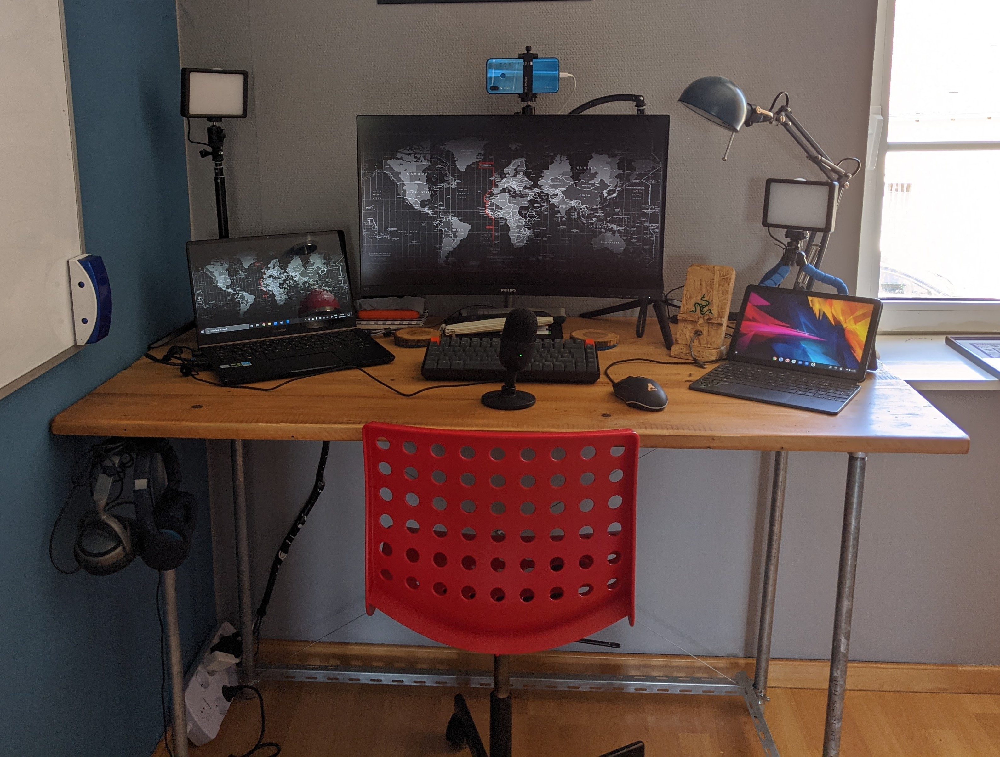
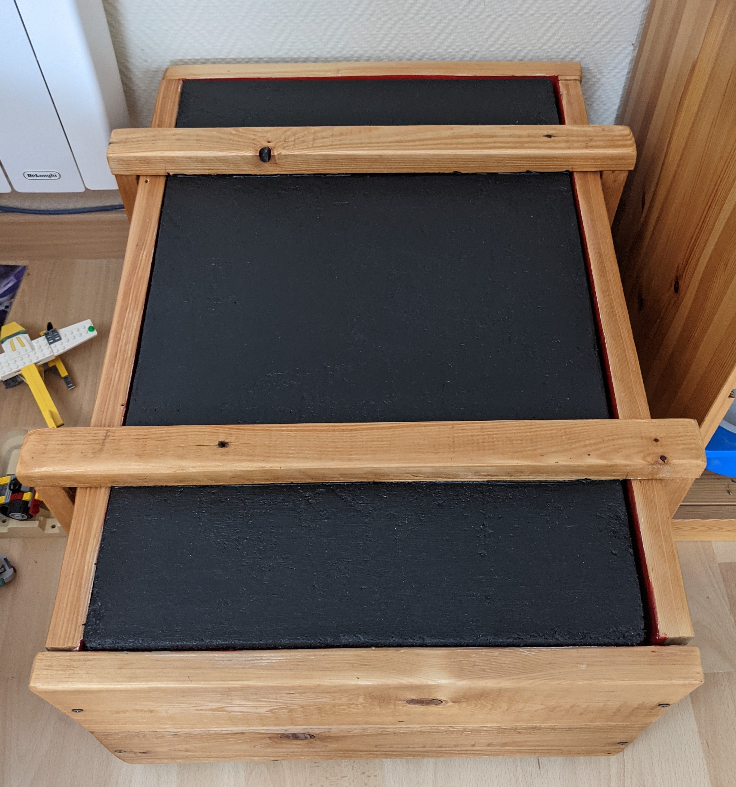
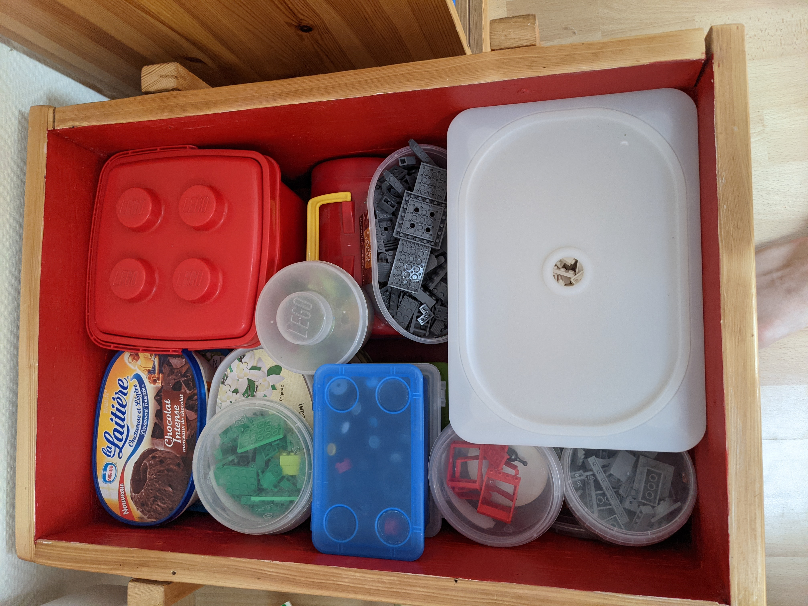

An analysis of the letters in the names of all the stations on the Paris Metro. This project was first inspired by a question asked on one of the Metro's official Twitter/X accounts asking which station names do not have a "E".
I decided to take it a step further and count the total amount of each letter to find the most and least common ones, and make some nice graphs.
The project was coded in R script.
Bar graph of letter distribution
A simple desk build that I first built 7 years ago and have since improved and used a lot.
A project designed to test my skills; although not entirely succesful, I learnt a lot and have since figured out a solution to my problems.
A crate to store my lego so that it is nicely stored and looks like a proper piece of furniture, rather than a toy.
 
Space Engineers is a sandbox game about engineering, construction, exploration and survival in space and on planets. Players build space ships, wheeled vehicles, space stations, planetary outposts of various sizes and uses, pilot ships and travel through space to explore planets and gather resources to survive.
As my start to Space Engineers modding, I made a custom speed mod that fit with some of my designs and was faster than the base game but not too fast.
I created a modded Minecraft server for me and my brother to play on with Docker. It was an opportunity for me to discover Docker, Ubuntu and remote computing.
I wanted somewhere to list more of my publications and other projects I've worked on. So I decided to create this website for this purpose. I decided to code it myself as an opportunity to learn HTML.